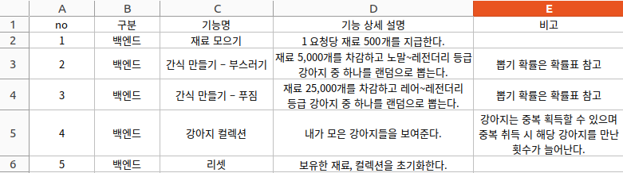
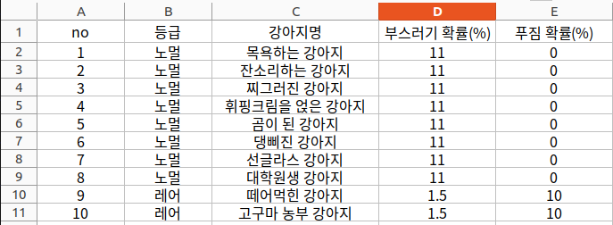
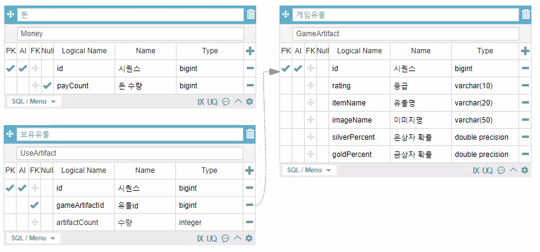
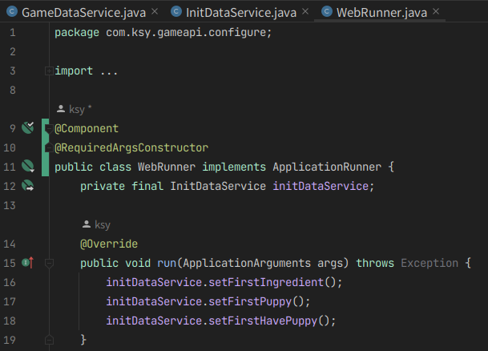

소개
특장차 제작 업체에서 계약건별 제조 공정을 확인할 수 있는 애플리케이션입니다.
업체 직원을 위한 APP과 고객 확인용 APP을 나누어 제작했습니다.
제작기간 : 2023.04.21 - 06.01
팀원 : 강유준, 최병권, 이소우, 강성중, 김소윤
담당 파트
(API) 공정 관리, 패키지 관리, PUSH 알림 연동, 로그인
(APP) 고객용 앱 로그인, 진행상황 확인 목록
사용 기술
Back-end : Java https://gitlab.com/all_xm/puppygameapi
Front-end(APP) : Flutter https://gitlab.com/all_xm/appclickgame
DB : PostgreSQL
Tools : IntelliJ, DataGrip
내용
요구기능 정의서
확률표
ERD
 프로그램 실행 시